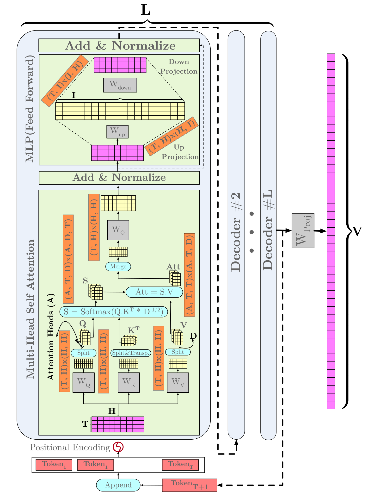
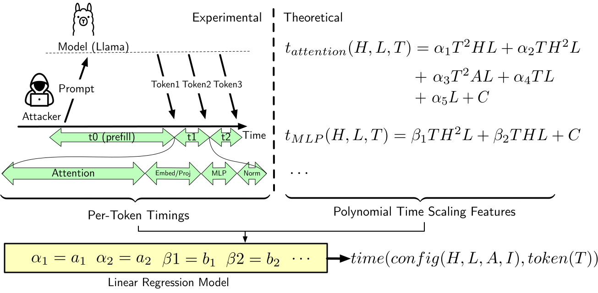

§ TL;DR
A streaming API hands you the model's clock
Model architecture is a trade secret. So is the way a provider serves it: which optimizations run in the inference pipeline, and how they are configured. Neither gets published, and the working assumption is that a streaming API gives an outside observer nothing beyond the text itself.
It gives them the clock. We show that per-token generation timing, measured through an ordinary API, recovers both kinds of secret. Two attacks do the work.
The first detects speculative decoding and measures the context window of the hidden draft model. On Google's Gemini Flash 2.5, per-token latency roughly triples at a prompt length of 131,059 tokens. Subtract our 17-token prologue and the draft model's context window is 131,042. Call it 128K. Flash 2.5 Lite breaks in the same place. Flash 1.5 breaks at 32K. None of this is documented anywhere.
The second attack recovers architecture. We build a timing model of transformer inference on NVIDIA GPUs from first principles, fit its coefficients to real measurements, then search the space of plausible configurations for the one whose predicted trace matches what we observed. Against a Llama 3.1 8B endpoint we had no access to, the correct hidden dimension came back ranked first.
The defenses that would close this channel (constant per-token time, or buffering tokens before sending them) cost latency. Latency is what the optimizations were for.
§ Background
What's actually being streamed
A hosted model does not hand you a finished answer. It hands you one or a few tokens, then more, and the gap between them is roughly how long the GPU took to produce them. Providers work to keep those gaps short, because users will not wait. A pipeline tuned that carefully ends up publishing a high-resolution trace of its own behavior to anyone willing to timestamp the arrivals.
What sets the size of a gap? Some of it is the network. The rest is the model and the machine under it: how many matrix multiplications one forward pass needs, how big each one is, how much memory traffic they generate, and whether the provider has arranged for some tokens to skip the expensive path entirely.
Those quantities are not arbitrary. For a decoder-only transformer, nearly all of the per-token cost is set by five numbers:
- H is the hidden dimension, the width of the vector carried through the network.
- L is the number of decoder layers, the depth.
- A is the number of attention heads.
- I is the intermediate size of the MLP.
- T is the sequence length.
The first four are the architecture, and providers treat them as confidential. The fifth is the prompt, and it belongs to the attacker. That asymmetry is what the attack exploits: sweep T across a wide range, watch how per-token latency responds, and work backwards to the four numbers you cannot see.

Network latency is the obvious objection, and it is smaller than it looks. A constant round-trip time shifts every arrival by the same amount, which leaves the differences between consecutive tokens untouched. Only the variance matters. Over the endpoints we measured it is small: mean RTT of 26.65 ms to Gemini with a standard deviation of 0.07 ms, and 5.75 ms to Cohere with 0.08 ms. Both standard deviations sit under 5% of the fastest per-token generation time we recorded. The signal survives the network.
§ Threat model
The attacker in this work is a customer
They open an account, send prompts through the documented streaming endpoint, and record when each token arrives. That is the whole apparatus. No logits, no activations, no server logs, no privileged position on the network, no access to the machine. They know what the provider's documentation tells everyone: the model's name, its family, its advertised context length. Nothing more about what runs underneath.
The attacker has
- A standard API account with streaming enabled
- A timer
- Public documentation: model name, family, advertised context length
- Control over the content and length of their own prompts
The attacker does not have
- Logits, logprobs, or activations
- Server logs or system-level access
- Any privileged network position
- Control over generation parameters beyond what the API exposes
What they're after: the number of decoder layers (L), hidden dimension (H), attention heads (A), and MLP intermediate size (I), plus which inference optimizations are running and how they are configured.
Turning a timing trace into an architecture requires a timing model of the target hardware, which means knowing the GPU class the model is served on and being able to get time on one to collect training measurements. We also assume the model is served from a single GPU. We do not model multi-GPU serving, which is how the largest frontier models actually run.
So the architecture attack is demonstrated against small and mid-size models on known hardware. The Gemini results in the next section come from the first attack, which needs none of that.
§ Attack 1
Speculative decoding, and the cliff
The optimization is simple and it works.1 Run a small draft model ahead of the large one. The draft proposes several tokens. The large model verifies them all in a single forward pass. If the draft guessed right, several tokens are accepted at once and the expensive model ran once instead of four times. If it guessed wrong, the speculated tokens are discarded and the pipeline falls back to producing a single token the slow way, plus the wasted draft work.
Processor designers have been here before. This is speculative execution, and part of why Spectre2 worked is that speculation which gets rolled back still leaves a trace. Speculative decoding does not make every token faster. It makes the common case faster and the uncommon case slower. That difference is visible from outside the API.
Making the draft model fail on purpose
Detecting some optimization is easy. Any input-dependent variation in per-token latency tells you something is running. Attributing that variation to speculative decoding specifically is the hard part.
The lever is the draft model's context window. A draft model is picked to be small and fast, and extending its context costs both compute and memory, so in practice it gets a shorter window than the model it serves. That gives us a prompt length at which the draft goes blind and the main model does not. Past it, the draft is guessing at information it cannot read, so every speculation is rejected, not occasionally but every time.
The prompt puts a random number at the very front and pushes it back with padding:
The value of number NUM at the start was equal to
The task never gets harder. It is the same recall task at every length, so prompt length is the only thing that varies. Two details matter beyond that. The number and the padding are freshly randomized on every trial, which stops server-side caching from answering for us. And prompt lengths are sent in randomized order, so a provider that throttles by length or request sequence cannot be mistaken for a cliff.
Checking the instrument first
Before pointing this at a production API, we pointed it at a system where we already knew the answer. Guanaco 13B as the main model, TinyLlama 1.1B as the draft, running a public implementation of speculative decoding on a local GPU.
Sweeping prompt length from 82 to about 4,000 tokens, per-token latency is flat and low, and then it jumps. Binary search puts the jump at Tbreak = 2,030 tokens. Subtracting the prologue leaves 2,018. Round to the nearest power of two, since context windows essentially always are one, and the estimate is 2,048.
TinyLlama 1.1B has a 2,048-token context window. Turning speculative decoding off removes the jump entirely, which rules out the obvious alternative explanation.
The same procedure against Gemini
Unmodified, against Google's public API. Gemini Flash 2.5 shows the cliff at a prompt length of 131,059 tokens. Below it, tokens arrive in 1.7 to 3.6 milliseconds. Above it, 8.0 to 11.2. Averaged across the four output positions we tracked, crossing the break multiplies per-token latency by 3.2×. Subtract the 17-token prologue and the draft model's context window is 131,042 tokens, or 128K less a 30-token margin.
Flash 2.5 Lite breaks at the same place. Flash 1.5 breaks at 32,743, which is 32K. Google documents none of this.
 \n
\n | System | Measured break | Recovered draft context |
|---|---|---|
| Guanaco 13B + TinyLlama 1.1B (local) | 2,018 | 2K ✓ |
| Gemini Flash 2.5 | 131,042 | 128K |
| Gemini Flash 2.5 Lite | 131,042 | 128K |
| Gemini Flash 1.5 | 32,743 | 32K |
- Prompt
- 130,939 tokens
- Measured
- Regime
131,059 − 17 (prologue) = 131,042 ≈ 128K , the draft model's context window.
What the other models did
We ran the same sweep against fourteen production models. Three showed the signature. Cohere's Command R+ has a per-token curve that is not flat but smooth and stable, which is what KV-cache growth looks like rather than speculation. Gemini Flash 2.0 Lite is close to constant across the whole range.
The test detects a draft model whose context window is shorter than the main model's. A provider running a draft model with a matched window would be invisible to it, as would a deployment that speculates in some other way. This method produces false negatives by construction. "We did not detect it" is the strongest claim the negative results support.
§ Attack 2
Reading architecture off the clock
The second attack starts somewhere else. Per-token generation time grows with sequence length, roughly quadratically, because attention is quadratic in T. The coefficients of that growth are not free: H, L, A and I enter them in specific polynomial combinations. Two models with different architectures therefore produce differently-shaped latency curves, and the shape is a fingerprint.
A timing model you can read
We build the predictor bottom-up. Decompose a decoder block into its subcomponents, then each subcomponent into primitive operations: matrix multiplications, softmax, elementwise adds. Derive each primitive's compute and memory cost analytically as a function of T, H, A, I and the element width. Convert cost to time by dividing by the machine's peak arithmetic throughput and memory bandwidth. Then attach a coefficient to every term to absorb what the analysis does not capture: tiling, vectorization, kernel launch overhead, imperfect overlap between compute and memory.
For a single query projection that gives:
α, β and C come from regression on real measurements. Fit one model per subcomponent, sum them, and add a final regression for the residual overhead that belongs to no component in particular: kernel launches, synchronization, per-iteration costs.
Why linear regression, when a neural network would fit the data better? Because the terms correspond to real cost components, so a bad fit is diagnosable. Because linear models do not chase residual noise, which a more flexible model would absorb and then fail to extrapolate from. And because individual terms can be swapped when the implementation changes, which is exactly what happens next.
Four predictors
- EagerBaseline. Attention decomposed into cuBLAS matrix multiplications, as in a stock HuggingFace transformers forward pass.
- Eager (Corrected)Same, plus the cuBLAS kernel corrector below. This is the variant that survives contact with architectures it has not seen.
- Flash2Attention terms replaced with FlashAttention2's3 memory-access behavior. Derived from the algorithm, not from one implementation. Every other subcomponent is unchanged and simply refit.
- KV-Flash2Flash2 split into a prefill formulation and a decode formulation, because KV caching makes those two phases scale differently.

Modeling the library, not just the model
cuBLAS does not have one matrix-multiply kernel. It has many, and it chooses between them based on operand shapes and internal heuristics. A predictor whose coefficients were fit at one set of dimensions mispredicts at another, not because the asymptotics changed but because the library quietly switched to a different kernel with different constants.
So we model the library too. A LightGBM4 classifier predicts which kernel cuBLAS will select for a given pair of operand shapes, and a small random forest per kernel predicts that kernel's runtime.
On test architectures the predictor had never seen, this takes NRMSE from 0.411 to 0.119. The naive variant fits its training family fine and falls apart off it. The corrected variant holds.
![Diagram of the runtime correction pipeline. A candidate configuration of H, L, A, I and T feeds a linear regression model and a table of the model's matrix-multiply dimensions. Those dimensions are matched against a database of training samples to find the closest matmul shapes. A LightGBM cuBLAS kernel selector predicts a kernel ID for both the candidate and the closest training sample, a random-forest runtime predictor estimates each kernel's runtime, and a share-based scaling step combines them into a corrected runtime.](assets/figures/correction_pipeline.svg)
Under the hood: the search space
A grid over every integer configuration would be hopeless, so the space is pruned with conventions real models follow. Layer counts are integers in a plausible band. Hidden dimensions are multiples of a base stride, 64 or 128. Head count is constrained so per-head dimension divides the hidden size evenly. Combinations that no one builds, like a very deep model with a tiny hidden size, are dropped.
That leaves 1,540 candidate configurations for the main evaluation, scored against each of 130 target configurations. The whole search takes about 20 minutes across 40 CPU cores. Candidates are ranked by RMSE between their synthesized trace and the observed one, and we keep a shortlist rather than the single best match, because timing is noisy and nearby configurations can look alike under a limited set of prompts.
A retrieval counts as correct only if every targeted parameter lands within one step of the truth: one layer for L, 128 for H, 4 for A, 1024 for I.
Results
Recovering one parameter with the others fixed works well across all three implementations. Recovering both at once is markedly harder, and the reason is visible in the model: most terms depend on the product H·L, so the classifier has to separate effects the physics has already mixed.
| Target | Eager (Corrected) | Flash2 | KV-Flash2 |
|---|---|---|---|
| Layers (L) | 86.15 | 97.69 | 83.78 |
| Hidden dim (H) | 71.54 | 100.00 | 70.95 |
| Both (H, L) | 65.38 | 54.62 | 45.27 |
The predictor also transfers across model families it was never trained on. Trained on Llama 3.2 1B alone, it predicts Qwen2.5 1.5B, Phi-3.5-mini 3.8B and Gemma2 2B with NRMSE between 0.159 and 0.186, comparable to its error on the family it learned from.
| Test model | NRMSE | L | H | (H, L) |
|---|---|---|---|---|
| Llama 3.2 1B | 0.221 | 100.00 | 93.64 | 90.91 |
| Llama 3.2 3B | 0.119 | 86.15 | 71.54 | 65.38 |
| Qwen2.5 1.5B | 0.159 | 77.27 | 100.00 | 50.00 |
| Phi-3.5-mini 3.8B | 0.183 | 97.50 | 97.50 | 80.00 |
| Gemma2 2B | 0.186 | 100.00 | 77.50 | 47.50 |
Against a real endpoint
Everything above runs on hardware we control. The last experiment does not. We pointed the attack at Weights & Biases' Llama 3.1 8B Instruct streaming API. That is a machine we have no access to, an inference stack we did not choose and did not instrument, timed by the same client we used for the Gemini experiments.
With L fixed, the correct hidden dimension ranks first. With H fixed, the correct layer count ranks fourth. Searching both at once across 2,068 configurations, a near-match at (H=4096, L=34) ranks 8th and the true configuration (H=4096, L=32) ranks 28th.
Limitations
The W&B result deserves an honest reading. It is a model from a family the predictor was trained on, though at dimensions outside its training range, served in FP16 on hardware whose class we knew. It shows the pipeline survives contact with a real API. It does not show that a frontier model is currently recoverable at this stage.
Three limits are worth stating plainly. Recovering H and L jointly drops to 45–65% even in the top five. The Flash2 and KV-Flash2 predictors are less accurate than the eager one. FlashAttention2's kernel is fused and its behavior depends on more than the dominant memory term we model, and that error propagates straight into ranking accuracy. And once a KV cache is warm, the decoding phase carries very little architectural signal, which is why the remote attack leans mostly on prefill.
§ Mitigations
Every mitigation trades against the latency it was meant to save
Make per-token time constant. Pad every token's generation to the worst case so latency stops depending on the architecture or on what the pipeline did. This closes the channel completely. It also means running every request at worst-case speed, which can be several times slower and deletes the reason the optimizations were deployed.
Buffer the stream. Emit tokens in fixed-size groups at fixed intervals rather than the moment each one is ready. This coarsens the channel instead of removing it, and it is adjustable, since larger groups leak less. The cost lands on time-to-first-token and on how responsive the stream feels, which is exactly the metric providers tune streaming for.
We do not have a mitigation that is free. The channel exists because inference is optimized and results are streamed as they arrive. Both are deliberate product decisions, and the defenses trade directly against them.
§ Responsible disclosure
Disclosure
- 2025-11-07Speculative decoding attack and the Gemini findings disclosed to Google.
- 2026-01-29Google acknowledged the findings.
This page describes what we found and why it matters. It is not a how-to, and it adds no operational detail beyond what the paper reports.
§ References
References
Works cited above, as they appear in the paper's bibliography. The full reference list is in the paper.
- Y. Leviathan, M. Kalman, and Y. Matias. Fast inference from transformers via speculative decoding. Proceedings of the 40th International Conference on Machine Learning (ICML'23), 2023.
- P. Kocher, J. Horn, A. Fogh, D. Genkin, D. Gruss, W. Haas, M. Hamburg, M. Lipp, S. Mangard, T. Prescher, M. Schwarz, and Y. Yarom. Spectre attacks: exploiting speculative execution. 40th IEEE Symposium on Security and Privacy (S&P'19), 2019.
- T. Dao. FlashAttention-2: faster attention with better parallelism and work partitioning. arXiv:2307.08691, 2023.
- G. Ke, Q. Meng, T. Finley, T. Wang, W. Chen, W. Ma, Q. Ye, and T.-Y. Liu. LightGBM: a highly efficient gradient boosting decision tree. Proceedings of the 31st International Conference on Neural Information Processing Systems (NIPS'17), pages 3149–3157, 2017.
§ Citation
Cite this work
@article{majidi2026leakylms,
title = {Leaky Language Models: Stealing Architecture and Inference
Optimizations via Per-Token Timing},
author = {Majidi, Sadegh and Mireshghallah, Niloofar and Taram, Kazem},
journal = {arXiv preprint arXiv:2607.20723},
year = {2026}
}
Code, measurement scripts and analysis notebooks are in the artifact repository, organized to mirror the structure of the paper.